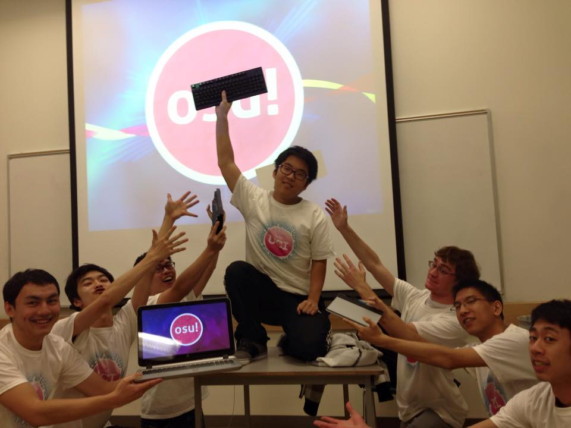

4 Mar. 2015
Oh man, I missed the entire month of February. I feel a bit bad now not writing a monthly blog. Hey, in my defense, February's missing a few days alright... I've been busy the past week catching up on schoolwork. I'm at an okay state right now after finishing a couple things, so I decided to take some time out now to write a bit.
Hmm, there's a lot to talk about. I guess I'll start off with what my current goals are. Well, I still have work I've gotta due for classes by the end of the quarter. That'll come first. A somewhat big homework assignment due for one class, an early final, and Capstone are what I have to worry about. Honestly, now that I'm looking at it, a lot of stuff.
I basically got done spending 24 hours working on networking labs nonstop. Really, really tough and tedious work, especially since I'm a bit sick right now. In retrospect I should have definitely started earlier, but hey, at least I finished everything. I want to take a small relaxing break from school right now, but I've got class work to worry about soon, so I'll have to get back in the groove of things quickly.
Outside of academics, I definitely want to finish my osu! song that I've been making on and off over the quarter. It's a space jam remix of the Baccano! opening.
"BARKLEYNO" - Quad City DJs vs Paradise Lunch, mixed by GARticuno
I actually finished a first draft of everything a while back, but after some feedback, I decided to half the slider speed, which required going through the entire map and fixing everything. Not fun stuff. Making a beatmap as I've learned is very tedious and time consuming, but definitely fun. I'd love to do a beatmap every quarter now, and explore more interesting things like storyboard.
This song will be part of our club's quarter compilation, which'll feature songs that the osu! UCI club has been working on throughout the quarter. I'm really happy with the progress everyone's made on their maps, or even just satisfied with the fact that everyone's making maps in general. We should hopefully have maybe half a dozen somewhat complete songs. Combining everything will probably be a bit tricky, but definitely doable with some fiddling around.
I want to say just overall that I'm really happy with how the club's grown over the quarter. I personally haven't done too much or outreached for the club. I don't think I'm the greatest of leaders or promoters, but a lot of our new members have stepped up over the quarter to help create a really awesome environment. Thank you all, and cheers to this great club! We're even on reddit!
Official club photo
Besides that, I guess I always have some more indepth stuff to talk about for my VGDC and Capstone projects. But I don't want to go into those here. They're probably better off left in the projects post-mortem sections. Hmm, I suppose I'll talk a bit about my Spring break plans.
This break is going to be short, pretty much 1 week only. I'm gonna host a local game jam with my friends, so that'll take up one weekend. I have a lot of things I want to do but that I probably won't get to. The biggest one will probably be setting up an official osu! UCI website for us. Doesn't have to be anything fancy, but it'll be good to get our name out there. If possible, I want to get that done 100%. And... I suppose I'll get back to trying to write some more project background/post-mortems. That should be way more than enough to occupy me.
Finally, I'll gloss over some music I got over the past month or two. I think the biggest thing I picked up was definitely the Rib album. Lots of awesome covers, but I kind of just ignored everything and listened to the new MIkitoP song "Akaito" to death. I'm honestly pretty sick of it now, but then they had to just go an release a PV for it too recently and now I've downloaded a bunch of other utaite covers as well. Awesome, I guess.
"Akaito" ft. Rib
Another song on the Rib album that I like
"Akaito" ft. 620
Also of good news is that the first Persona 5 PV came out recently. I'm not a huge player of Persona. I've played a bit of 3 but never beat it. But I'm still jumping on the hype train. The PV is so sick and the trailer song is absolutely amazing. I totally want to beatmap it. Oh yeah, and there's a space jam of it too that's likewise amazing.
Am considering buying a console for this...
...but PC master race, maybe I'll just watch a let's play
I'm going to edit in Barkley's face into the trailer and beatmap this song I swear
I haven't been keeping up on a lot of utaite/NND stuff, mainly because the few songs I've picked up during this time were really, really good. Akaito's been keeping me entertained for pretty much the last month, and I still like it. I picked up the new fhana album, but I don't know, I've kind of lost interest in them. The only song that I've really liked is a new song by sntb, a relatively unknown producer.
"Weeping Train" - sntb ft. nkz
What's funny though is that I have picked up a bunch of songs from osu! I love the sessions we hold together because I get exposed to everyone's tastes and music, a lot of which I end up liking.
"Buriki no Dance" - Hinata Electric Works ft. MARiA
"Omega Rhythm" - UPLIFT SPACE
Dammit, I haven't been able to pass this song yet
But I did finally beat this one
Alright, I'm tired of typing. See you all soon.